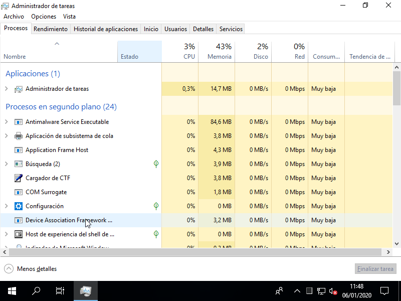

10.1.5. Administración de Windows 10¶
Advertencia
Los contenidos son absolutamente precarios y sólo ofrecen unas pinceladas, salvo en el caso de los permisos en que se ofrece una descripción algo pormenorizada del sistema de permisos.
10.1.5.1. Control de accesos¶
Windows 10 implementa un mecanismo de control de accesos DAC basado en ACLs. Así pues, el estudio del control de accesos en Windows se basa en estudiar:
- Cómo crear usuarios y grupos, y cuáles son los usuarios y grupos predeterminados por el sistema.
- Cuáles son los permisos que sobre los objetos permite definir el sistema y cómo otorgarlos a usuarios y grupos.
Además, pueden definirse de forma centralizada permisos a grupos y usuarios sobre determinadas acciones (p.e. el acceso al sistema).
10.1.5.1.1. Usuarios y grupos¶
Nota
Nos centramos en usuarios y grupos locales.
Hay varios modos de gestionarlos, pero el modo más compacto y completo de hacerlo es a través de la sección correspondiente del Administrador de equipos.
A grandes rasgos hay tres usuarios locales definidos:
- El Administrador, desactivado (por eso no aparece en el acceso).
- El Invitado, desactivado también y que se caracteriza por tener acceso limitado a las aplicaciones.
- El usuario definido durante la instalación, que es un usuario administrador con capacidad para acceder a la configuración del sistema. Lo más juicioso es no usarlo habitualmente, sino crear otro sin permisos de administración.
Hay varios grupos predefinidos, aunque podemos centrarnos en:
- Administradores, que son aquellos con control total sobre el equipo. El usuario definido durante la instalación pertenece a este grupo.
- Usuarios, a los que se les permite llevar a cabo las tareas más habituales como ejecutar aplicaciones o imprimir.
- Invitados, son usuarios con acceso limitado a los que, además, se les crea un perfil temporal que se crea al abrir una sesión y se borra al cerrarla. El usuario Invitado pertenece a este grupo.
Ver también
En este enlace de forsenergy.com se explican todos los usuarios predefinidos.
A diferencia de Linux, puede añadirse un grupo como miembro de otro.
Los usuarios tienen su perfil personal en la ruta
C:\Users\nombre_usuario, de manera que:- Cada vez que se crea ese directorio personal se copia el contenido de
C:\Users\Default(oculto), exactamente del mismo modo que en +Linux* se hace con/etc/skel. - Se hace accesible todo el contenido que se encuentra dentro de
C:\Users\Public. Por ejemplo, si enC:\Users\Public\Desktopse añade un fichero, ese fichero lo verán todos los usuarios en su escritorio. C:\Users\nombre_usuario\NTUSER.DATalmacena la configuración personal del usuario, de suerte que cada vez que éste inicia sesión, se carga el contenido de este fichero en el registro y se aplica la configuración (p.e. cuál es la imagen de fondo de escritorio).
- Cada vez que se crea ese directorio personal se copia el contenido de
10.1.5.1.2. Permisos¶
Los permisos sobre archivos de un sistema NTFS se definen con ACLs, por lo que podremos dar un determinado permiso a cualquier usuario o grupo definido en el sistema. La complejidad, sin embargo, deriva de que hay muchísimos más de tres permisos y de que estos se pueden conceder, denegar o no especificar. Confrontándolos con los tres permisos de UNIX, estos son los permisos avanzados que permite definir Windows sobre NTFS:
- Ejecución
Como en los sistemas UNIX, significa:
- Acceder a un directorio o ejecutar un archivo regular que sea un programa.
- Lectura
En lo que indistintamente se denomina lectura en los sistemas UNIX, Windows puede llegar a distinguir varias operaciones distintas:
- Leer el contenido de un archivo regular o de un directorio (en este último caso exclusivamente los nombres de los archivos que contiene)
- Leer cuáles son los atributos de un archivo.
- Leer cuáles son los atributos extendidos de un archivos, que son parejas nombre-valor equivalentes a lo que denominamos en Linux atributos extendidos de usuario.
- Leer cuáles los permisos asociados a un archivo.
- Escritura
De nuevo, Windows distingue distintas operaciones de escritura:
- Crear archivos regulares dentro un directorio o modificar el contenido de un archivo regular
- Crear directorios dentro de un directorio o añadir contenido a un archivo regular sin alterar el contenido ya existente.
- Modificar los atributos de un fichero.
- Modificar los atributos extendidos de un fichero.
- Eliminar el propio archivo.
- Eliminar archivos dentro de un directorio.
- Otros
Hay por último dos permisos que en UNIX, simplemente, son privativos del propietario del archivo o el administrador:
- Modificar los permisos.
- Cambiar el propietario (en realidad, «Tomar posesión»).
Estos 13 permisos atómicos[1], junto al de «Control total» que obtenerlos todos, son los permisos que pueden definirse a través de la interfaz de «Permisos avanzados». Sin embargo, Windows permite la definición de 6 permisos principales que incluyen a uno o varios de estos permisos atómicos y que además se solapan entre sí:
- Control total, que implica los 13 permisos atómicos.
- Lectura, que implica todos los permisos englobados de lectura.
- Lectura y ejecución, que añade a los de lectura el permiso de ejecución.
- Mostrar el contenido de la carpeta, que es el equivalente al anterior para directorios.
- Escritura, que implica los permisos de escritura, excepto los dos de eliminación, así como poder leer permisos.
- Modificación, que implica todos los permisos de lectura, ejecución y escritura, excepto, si se aplica sobre un directorio, el de eliminar los archivos que contiene.
| E | Lectura | Escritura | Otros | ||||||||||
|---|---|---|---|---|---|---|---|---|---|---|---|---|---|
| 1 | 2 | 3 | 4 | 5 | 6 | 7 | 8 | 9 | 10 | 11 | 12 | 13 | |
| Control total | X | X | X | X | X | X | X | X | X | X | X | X | X |
| Lectura | X | X | X | X | |||||||||
| Lectura y ejecución | X | X | X | X | X | ||||||||
| Mostrar carpetas | X | X | X | X | X | ||||||||
| Escritura | X | X | X | X | X | ||||||||
| Modificación | X | X | X | X | X | X | X | X | X | X | |||
La razón por la que se puede denegar un permiso es, precisamente, debida al solapamiento de los permisos. Por ejemplo, un determinado usuario puede tener control total sobre un fichero, excepto la capacidad de cambiarle el propietario, porque se concedió el permiso de «Control total» y se denegó el de Cambiar el propietario («Tomar posesión»).
Antes de completar los comentarios sobre permisos, es pertinente citar dos aspectos:
Herencia
Los permisos pueden definirse sobre el propio archivo o venir heredados de su directorio padre (que a su vez podía heredar del suyo y así precedentemente). En principio, cuando se define una ACL para un directorio se puede especificar que la regla sea heredable. Por otra parte, también es posible en un archivo renunciar a esa herencia convirtiendo la regla en propia y eliminándola. Esta es la única forma de alterar o quitarla ya que la regla en realidad no está definida en el propio archivo, sino en un directorio antecedente.
Atributos
Los ficheros en NTFS tienen, al margen de los permisos, una serie de atributos, algunos derivados de su propia naturaleza, y otros que son aplicables por quien tenga permisos para ello:
| Nombre | Código | Ajustable | Descripción |
|---|---|---|---|
| ReadOnly | 1 | Gráfico | Sólo lectura. |
| Hidden | 2 | Gráfico | Oculto. |
| System | 4 | Consola | Es archivo de sistema. |
| Directory | 16 | - | Es un directorio. |
| Archive | 32 | Gráfico | Modificado desde el último respaldo. |
| Compressed | 2048 | Gráfico[a] | El fichero está comprimido. |
| NotContentIndexed | 8192 | Gráfico | El servicio de indexación no indexa el fichero. |
| Encrypted | 16384 | Gráfico[a] | El fichero está cifrado. |
| [a] | (1, 2) En realidad el atributo no es ajustable, pero la interfaz gráfica da la posibilidad de comprimir o cifrar el fichero, por lo que como efecto colateral se aplicará el atributo. |
Ver también
Para información más extensa sobre cuáles todos los atributos y su significado consulte esta documentación de Microsoft y para saber cómo alterarlos a través de la PowerShell su valor, consulte este desaparecido artículo.
10.1.5.2. Directivas de seguridad¶
Las directivas de seguridad permiten configurar aspectos relacionados con la seguridad del sistema. Se accede a ellas mediante el programa secpol.msc o a través de las «Herramientas administrativas». Son interesantes:
- Directivas de cuenta, dentro de las cuales puede establecerse la política contraseñas (longitud, caducidad, etc.)
- Directivas locales, dentro de las cuales se les puede asignar a usuarios y grupos, permiso para llevar a cabo ciertas tareas.
10.1.5.3. Directivas de grupo¶
Las directivas de grupo permiten habilitar o deshabilitar ciertos elementos de Windows. Las que afectan a todos los usuarios pueden configurarse a través de su editor gpedit.msc. También se pueden aplicar las directivas a usuarios concretos o conjuntos de usuarios (administradores/no administradores) mediante el uso del programa mmc.exe y eligiendo como componente el «Editor de directivas de grupo».
Ver también
Puede ver cómo llevar a cabo esto último en este tutorial.
10.1.5.4. Gestión de procesos¶
Para la gestión de procesos, Windows 10 proporciona el Administrador de tareas, accesible a través del menú que se presenta al pulsar Ctrl+Alt+Supr, o directamente pulsado Ctrl+Shift+Esc, o ejecutando TaskManager.exe. La aplicación dispone de distintas pestañas cada una de las cuales sirve para un propósito:
- Procesos permite consultar los procesos en ejecución y cuáles son los recursos que consumen. Además, permite matarlos.
- Detalles enumera los procesos indicando cuál es el ejecutable.
- Servicios permite arrancar y parar servicios. Si el proceso que deseamos parar es un servicio, es preferible hacerlo usando esta pestaña.
- Rendimiento nos ofrece información sobre el consumo de CPU, memoria, etc.
- Inicio lista una serie de aplicaciones que se ejecutan automáticamente durante el arranque del sistema. Se permite deshabilitarlas.
10.1.5.5. Gestión de servicios¶
Además de poder arrancar o parar servicios a través del Administrador de tareas es posible llevar a cabo una gestión más exhaustiva decidiendo qué servicios se habilitan o deshabilitan, de manera que se levanten o no automáticamente al iniciar Windows. Esto es posible a través del gestor de servicios al cual puede llegarse a través del Administrador de Equipos o directamente ejecutando services.msc.
10.1.5.6. Programación de tareas¶
Para programar tareas futuras, periódicas o que deben ejecutarse al producirse alguna circunstancia (p.e. al iniciar sesión), debe utilizarse el Programador de tareas accesible a través de las «Herramientas administrativas».

Crear una tarea básica es relativamente sencillo (puede consultar este enlace de genbeta sobre cómo programar tareas en Windows 10). La lista de tareas definidas por el usuario pueden consultarse en la sección «Biblioteca del Programador de tareas», aunque, si no aparece, habrá que actualizar la vista con el menú contextual.
10.1.5.7. Restauración del sistema¶
Windows 10 permite crear puntos de restauración de sistema operativo (no del sistema de archivos, para lo cual tendríamos que crear copias de seguridad) a través del programa SystemPropertiesProtection.exe, accesible desde las «Propiedades» de «Este Equipo» o la sección «Sistema» del «Panel de Control». La creación de estos puntos exige primero habilitar la posibilidad reservando una cantidad de espacio en disco para ello.
Ver también
Puede consultar este artículo de genbeta.com sobre restauración.
10.1.5.8. Administración de discos¶
Puede llevarse a cabo a través de la «Administración de equipos» o directamente a través de diskmgmt.msc.
10.1.5.9. Ejercicios sobre administración de Windows 10¶
Nota
Para entregar las prácticas, componga un documento en que explique cómo las ha llevado a cabo y adjuntando capturas que atestiguen que lo ha hecho.
Debe crearse el siguiente conjunto de usuarios en un Windows 10 nuevo:
Usuario Nombre Largo Contraseña Tipo Otros grupos MrPotato Señor Patata MrPotato Administrador - Prof1 Profesor 1º Profesor1? Administrador Profesores Prof2 Profesor 2º Profesor2? Administrador Profesores Alum1 Alumno 1º Alumno1 Normal (Usuarios) Alumnos Alum2 Alumno 2º Alumno2 Normal (Usuarios) Alumnos Para los cuales debe cumplirse lo seguiente:
- Todos los usuarios verán en el Escritorio un PDF con las normas de uso
llamado
normas.pdf. Los alumnos serán incapaces de modificarlo o eliminarlo, pero obviamente, sí podrán consultarlo. - Un enlace directo a estos mismos apuntes.
- Una carpeta llamada
TotumRevolutumcomún a todos los usuarios. - Una carpeta llamada
MisCosasparticular para cada usuario (esto es, cada uno tendrá la suya).
- Todos los usuarios verán en el Escritorio un PDF con las normas de uso
llamado
Configure
TotumRevolutumpara que:- Los alumnos no puedan eliminar la carpeta.
- Los profesores y alumnos sean capaces de crear archivos regulares, pero no directorios.
- Los profesores sean capaces de borrar todos los archivos.
- Los alumnos no sean capaces de borrar los archivos de los demás.
Configure las directivas de seguridad local para que:
- Las contraseñas deben tener una longitud mínima de 8 caracteres y y una caducidad de 30 días. Además, al tercer intento de acceso fallido se bloqueará el usaurio durante 3 minutos.
- Eliminar la posibilidad de apagar si no se ha iniciado sesión.
- Avisar de que la contraseña está próxima a expirar con 3 días de antelación.
Y a través de las directivas de grupo, evite que los alumnos puedan cambiar la configuración y acceder al panel de control.
Usando el Administrador de tareas:
- Compruebe el consumo de CPU y de memoria del sistema.
- Liste los procesos ordenados según su consumo de memoria.
- Mate el Explorador de archivos, que previamente haya abierto (claro está).
Deshabilite las actualizaciones de Windows 10.
Nota
Las actualizaciones de Windows son un servicio.
Configure el sistema para que:
- Se apague de lunes a viernes a las 15:00 y a las 23:00 de la noche.
- Al iniciar la sesión del usuario, se abra automáticamente el explorador de archivos.
Lleve a cabo las siguientes operaciones:
- Cree un punto de restauración del sistema, llamado «MiSistemaConTareas».
- Borre las tareas del ejercicio anterior.
- Recupere el punto de restauración «MiSistemaConTareas».
- Compruebe que han vuelto a recuperarse las tareas anteriores.
Notas al pie
| [1] | Atómicos en el sentido de que no pueden descomponerse en otros más simples. |